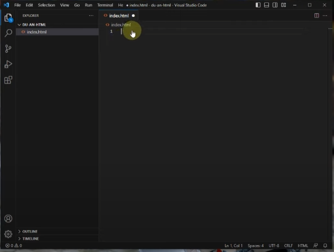
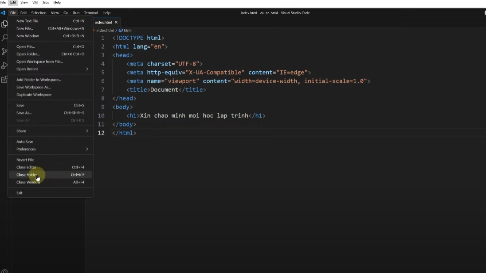

Chào mừng các bạn đến với tuhoc.cc
Bài 1: Tổng quan lập trình web : Cách mà internet vận hành - Khám phá cơ bản về lập trình web
bai 2: Lập trình website - Static website & Dynamic website - Front End & Back End
-
Dưới đây là hình ảnh Static website(wed tĩnh) và Dynamic website(wed
động)
- Đây là 2 hình ảnh Front End & Back End hoạt động như thế nào:
bai 3: Setup Visual studio code - First webpage - Lập trình web cho người mới bắt đầu
-
Bước1: vào trình duyệt wed:
https://code.visualstudio.com/
-
Bước2: Sau đó chọn dowload window bản 64bit (bài học này dành cho máy
tính nhé) hình ảnh tải
-
Bước3: Sau khi tải xong tìm thư mục chuọt phải rồi chọn hiển thị trong
thư mục
-
Bước4: Sau khi mở thư mục chọn vscode chuột phải chon Run as admin như
hình dưới đây
- Bước5: Sau đó ấn ok và chon như trong hình dưới đây
-
Bước 6: Vào ứng dụng vscode tạo thư mục ta chọn file chọn open
folder...ctrl+K ctrl+O như hình dưới đây
-
bước 7: Sau khi chọn sẽ hiện thư mục chọn This pc chọn ổ D chuột phải
chọn new tạo thư mục mới như hình dưới đây và đổi tên thư mục tùy ý (
lưu ý: ko có dấu là được ko có dấu cách để tránh trường hợp lỗi đường
dẫn)

-
bước 8: Sau khi tạo thư mục xong ấn selectfolder như hình bên dưới:
- bước 9:bước tiếp theo chon như hình bên dưới
-
Bước 10: Sau khi tạo xong thư mục Du-an-html chuột trái vào biểu tượng
tạo file như hình dưới đây
-
Bước 11: sau khi tao File chúng ta đặt tên cho file đó là index.html
như hình bên dưới
-
bước 12: Sau khi đặt tên file xong ấn enter sẽ hiên ra bảng để cho
chúng ta code như hình bên dưới

-
Bước 13: Dòng số 1 đầu tiên chúng ta ấn Shift 1 để ra dấu ! sẽ hiện
bảng code cấu trúc tiêu chuẩn của html như sau:
<!DOCTYPE html>
<html lang="en">
<head>
<meta charset="UTF-8">
<meta name="viewport" content="width=device-width, initial-scale=1.0">
<title>Document</title>
</head>
<body>
</body>
</html>
-
Bươc 14: Chỉnh kích thước fon chữ ta cần vào cài đặt và chỉnh như hình
bên dưới
-
bước 15: Trường hợp chúng ta muốn biết file index.html nằm ở đâu thì
chúng ta ấn chuột phải vào index.html chọn reveal in file explorer
hoặc Shirt+alt+R như hình minh họa bên dưới
-
bước 16: Sau khi mở file dự án trong thư mục chúng ta thấy file index
thiếu phần mở rộng thì ta chọn wiew

- Bước 17: Chọn tiếp options chọn change foder and search options
-
Bước 18: Tiếp tục chọn vào wiew bỏ dấu tích hide extensions for known
file types

-
Bước 19: sau khi cài xong ta được file index mở rộng thành index.html
như hình
-
Bước 20: Sau khi cài đăt mở rộng ta ấn chuôt phải vào file index.html
chọn open with tiếp tục chon google chrome sẽ hiện lên trình duyệt wed
sẽ hiện trang wed màu trắng chưa có gì
-
Bước 21: Giờ chúng ta sẽ bắt đầu code những dòng code đầu tiên lấy
vd:chúng ta sẽ code vào trong thẻ body tạo thẻ h1 và viết những dong
code đầu tiên và ấn ctrl f để lưu lại dưới đây là hình ảnh minh họa
-
bước 22: Sau khi viết code ta mở thư mục giống bước 13 và 19 ở trên
khi hiện thị trang wed sẽ như hình dưới đây
-
Bước 23: Để tạo một dự án mới ta đóng file dự án cũ ta chọn file chon
tiếp close folder phím ctrl+k+f để đóng dự án lại

-
bước 24: Trường hợp muốn đưa nhiều dự án vào làm việc thì ta chọn file
chọn tiếp add folder to workspace..
-
Bước 25: hiện thư mục chọn this pc chọn ổ lưu file không nên chọn ổ C
tạo thư muc mới giống với bước 7 và bước 8 ở trên
Bài 4: Install Extensions Visual studio code - hướng dẫn cài đặt vscode extension để lập trình web
-
Cài tiện ích mở rộng: prettier-tự động định dạnh lại code trông đẹp
hơn và dễ đọc hơn
-
Bược tiếp theo chọn vào cài đặt tìm default format chọn prettier-code
formater
- Cài tự động định dạng tệp mỗi khi lưu : format on save
- Cài đặt auto save : tự động lưu tệp,tránh mất công toi
-
Cài đặt icon theme vscode: để tạo các biểu tượng thư mục vscode nhìn
trực quan hơn khi tương tác các thư mục
- Cài thêm 4 tiện ích như hình bên dưới
-
live sever preview hiển thị page ngay trong hình vscode để tiện quan
sát
- Code Spell checker tự động check chính tả
- html tag wrap chèn thêm thẻ vào một khối sẵn có
- HTML to css autocompletion tự động gợi ý tên class,id trong css